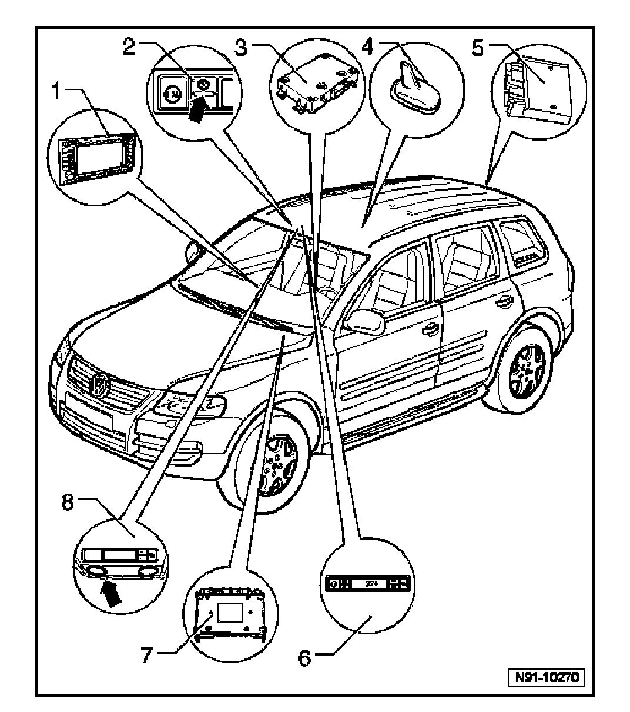

Global Positioning System: Locations
Telematics System, Component Overview

1. Radio/Navigation Display Control Module -J503-
2. Telematics Indicator Lamp -K186-
- In Telematics Control Head.
- LED indicates Telematics system operational status.
- Telematics system, troubleshooting using Telematics indicator lamp.
3. Telematics Control Module -J499-
- Under front passenger's seat
4. Antenna -R11-, Antenna Amplifier -R24- and Navigation System (GPS) Antenna -R50-
- On roof, front
5. Comfort System Central Control Module -J393-
- Controls vehicle lock and unlock functions as part of Telematics service.
- In right rear luggage compartment.
6. Telematics Control Head -E264-
- In front headliner ahead of front interior light module.
- OnStar(R) buttons, description.
- Includes Telematics indicator lamp.
7. Vehicle Electrical System Control Module -J519-
- Controls emergency flashers and horn as part of Telematics service.
8. Telephone Microphone -R38-
- Integrated with front interior light module.